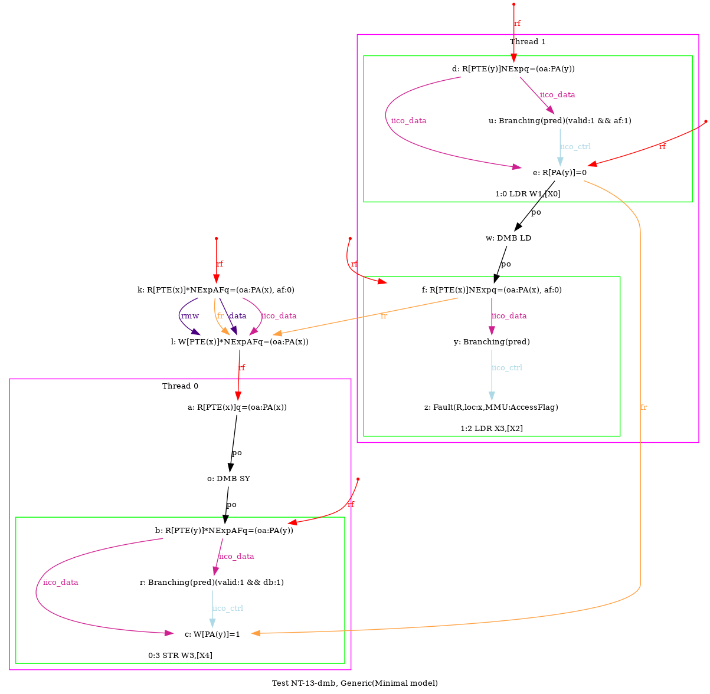
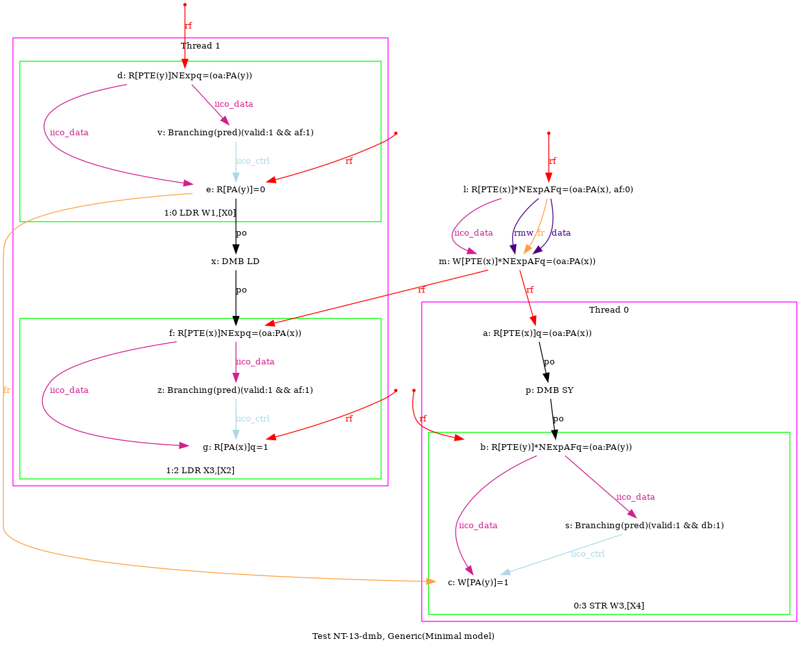
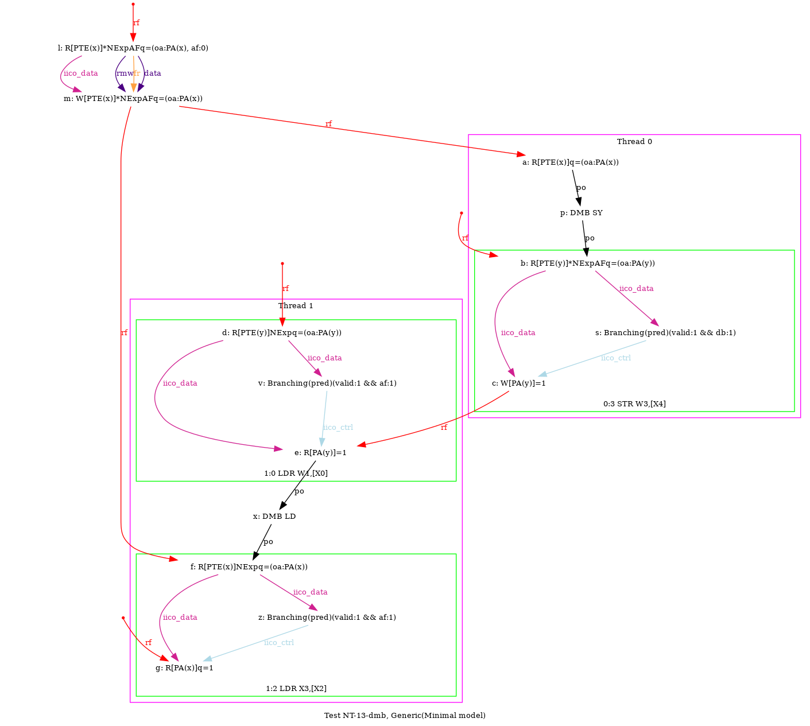
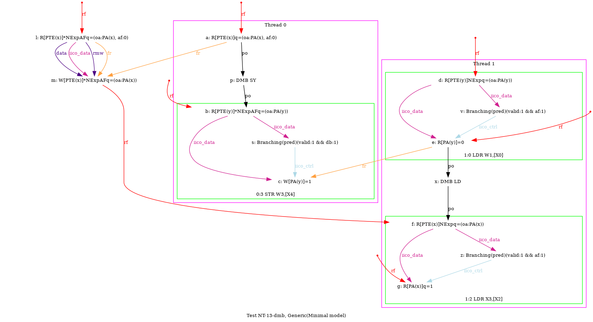

   …
AArch64 NT-13-dmb
TTHM=P0:HA
Variant=precise
{
pte_x=(af:0);
x=1;
0:X0=pte_x; 0:X4=y;
1:X0=y; 1:X2=x;
}
P0 | P1 ;
LDR X1,[X0] | LDR W1,[X0] ;
DMB SY | DMB LD ;
MOV W3,#1 | L0: LDR X3,[X2] ;
STR W3,[X4] | ;
exists (0:X1=(oa:PA(x)) /\ 1:X1=0 /\ ~fault(P1:L0,x)) \/ (0:X1=(oa:PA(x)) /\ 1:X1=0 /\ fault(P1:L0,x,MMU:AccessFlag)) \/ (0:X1=(oa:PA(x)) /\ 1:X1=1 /\ ~fault(P1:L0,x)) \/ (0:X1=(oa:PA(x), af:0) /\ 1:X1=0 /\ ~fault(P1:L0,x)) \/ (0:X1=(oa:PA(x), af:0) /\ 1:X1=1 /\ ~fault(P1:L0,x))